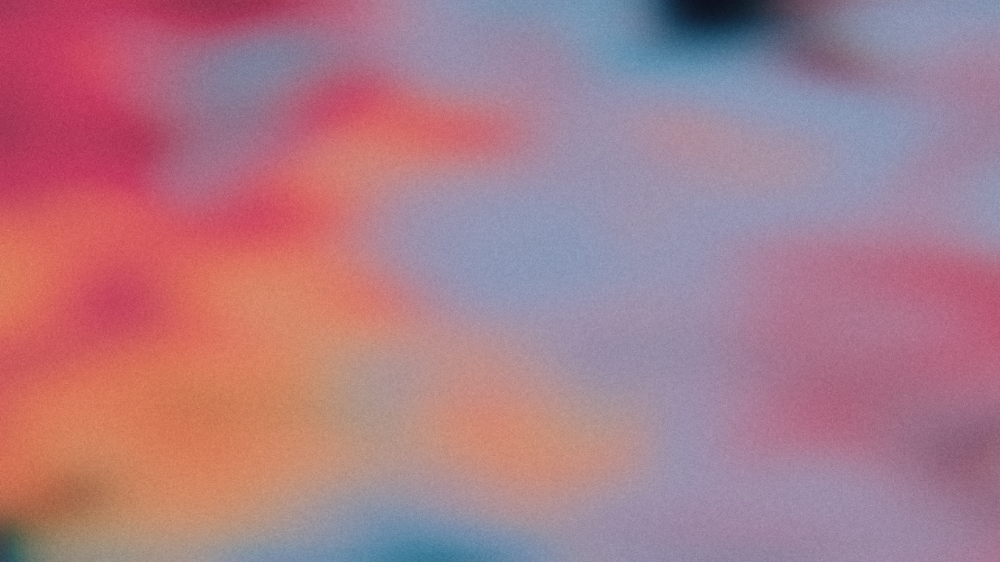

3. Interactive Parameter Sweeps
0.15

0.15 (Balanced): Provides a rich background anchor with punchy accent emission and delicate outer halos.
0.35

0.35 (Optimal): Natural nebula filament radius with vibrant overlap without muddying the field.